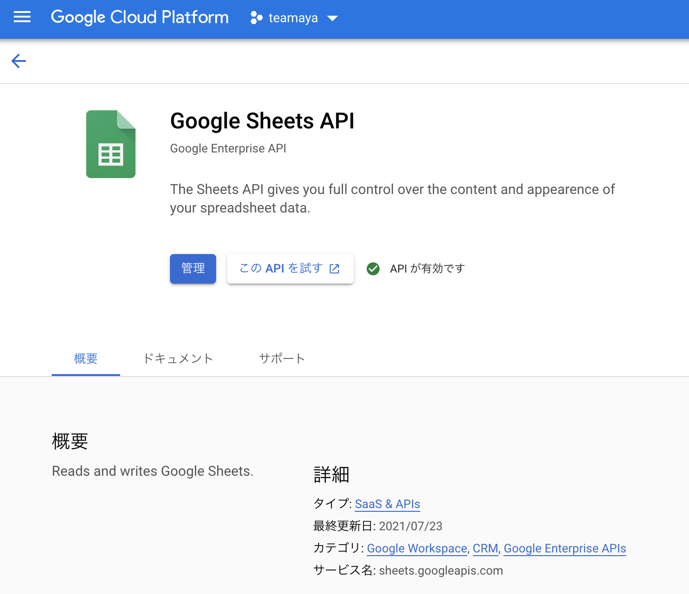

はじめに
今回は，teamayaという個人プロジェクトで進めているデータ連携の話になります．コードは以下のリポジトリに置いてあるので，ご自由に使用下さい！
具体的には，手元にあるスプレッドシートのデータをBigQueryの特定のテーブルに連携するまでの話になります．余談ですが，連携したデータはData Studioで可視化したりもしています．
データ連携をするだけであれば，Embulkを単体実行するのでこと足りますが，今回はサーバーモードで立ち上げたDigdag UIを使ってワークフローを実行しています．スケジュール実行，ワークフロー管理や履歴管理などがUIからだとしやすく，使い心地などを知るためにも使用しました．
また，Docker環境で実行できるように構成しています．Docker化することで，簡単に別環境に持っていくことができますし，スクラップ&ビルドがしやすいのもあります．
今回は以下の2種類の方法でデータを連携する方法を紹介します．内容的には既に技術記事に書かれているものが多いと思いますが，今回はDockerコンテナで各タスクが実行できるようにしているので，その辺りを参考頂けたらと思います．
- Dockerコンテナ内からEmbulkを実行して，データを転送
- Digdag UIからワークフローを実行して，データを転送
- こちらも裏側では，Embulkが実行されます．
今回のデータ連携フローのアーキテクチャーは以下のような感じです．

BigQueryとスプレッドシートの設定
GCPのアカウント登録方法は割愛しますが，gmailがあれば簡単に登録できます．登録が完了したら，適当なプロジェクトを作成して下さい．
- Google Sheets APIの有効化を行う
「APIとサービス」 → 「ライブラリ」と画面遷移し，検索窓にGoogle Sheets APIと入力して検索すると，スプレッドシートのAPIを有効化できる画面に遷移するので，有効化を行います．ここで有効化しておかないと，この後スプレッドシートを使用したデータ連携が出来ないので注意下さい！

- サービスアカウントの作成
それが終わったら，サービスアカウントを作成します．「IAMと管理」 → 「サービスアカウント」へアクセスした後，必要な情報を入力し，キーの作成からJSONを選択してキーの作成を行います．そうすると，サービスアカウントのJSONファイルがダウンロードされるので，これを~/.gcp配下に置いておきます．
- サービスアカウントのメールアドレスをスプレッドシートに登録
データ連携したいスプレッドシートを開き，右上の共有ボタンから「ユーザーやグループを追加」の枠にダウンロードしたサービスアカウントのメールアドレスをコピー&ペーストして，送信をクリックします．そうすることで，このスプレッドシートのデータを登録したサービスアカウントで転送することができます．
- BigQueryにデータセットを作成
データセットIDを適当に決めて，データセットの作成を行っておきます．
1. Embulkを直接実行した場合のデータ転送
この方法は，Dockerコンテナ内からEmbulkを直接実行して，スプレッドシートのデータをBigQueryのテーブルに転送する方法になります．